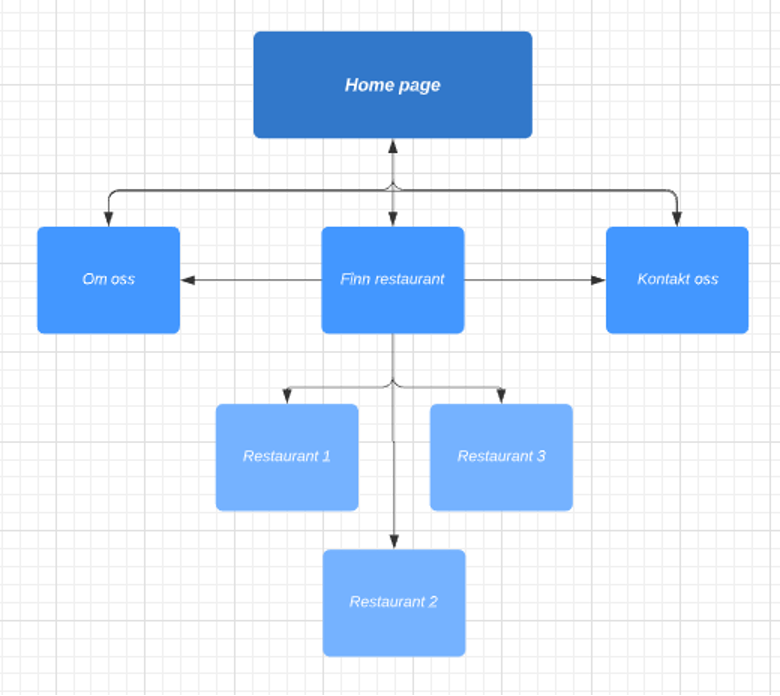
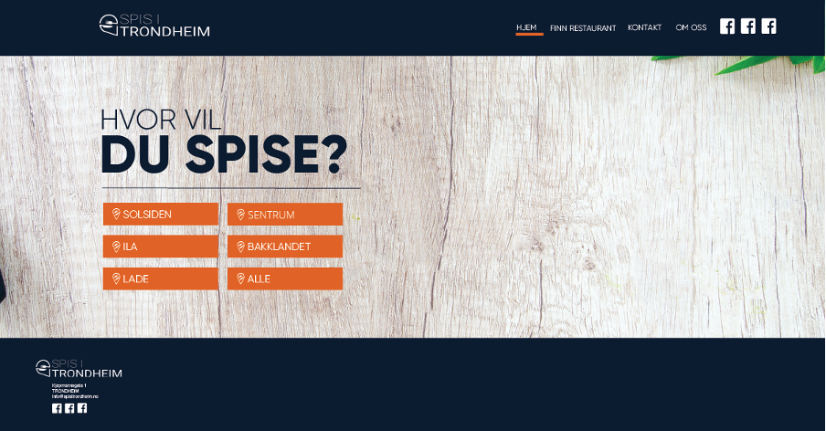
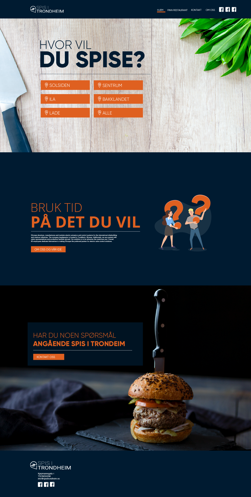
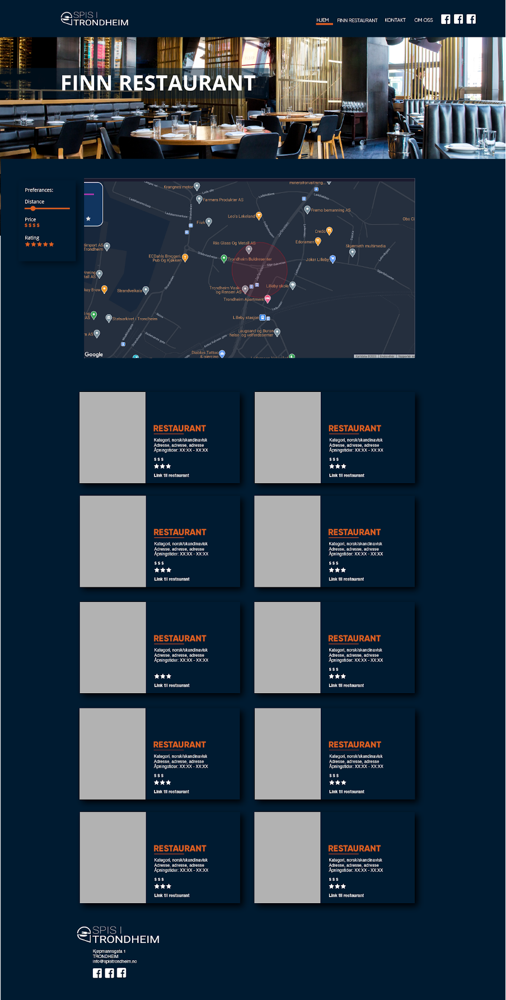
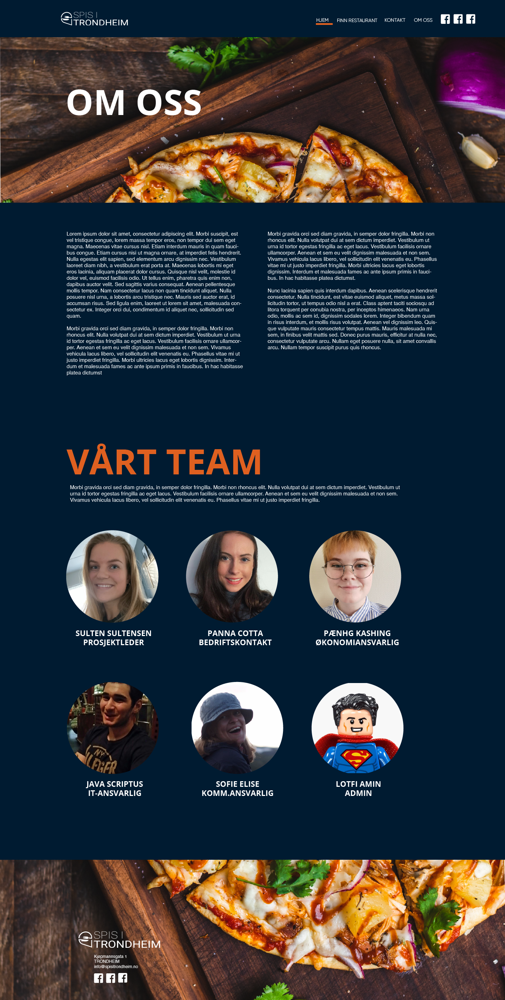
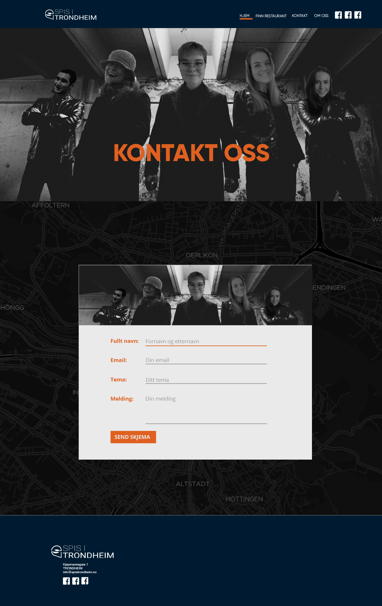

P2 prosjektkrav
Tekst: Solveig, Dennis, Eline, Jeanett og Synne
Kunde – Trondheim Kommune
Kontaktperson: Sulten Sultensen
Nettside: wwww.spisitrondheim.no
Formål, mål og målgruppen
Formålet med nettsiden er å forsøke å øke omsetningene til de ulike restaurantene i Trondheim gjennom å vise brukerne de ulike restaurantene på en enkel og oversiktlig måte. Ettersom Covid-19 fortsatt har en stor påvirkning på serveringsbransjen, ønsker vår kunde å hjelpe denne bransjen gjennom en opplysningskampanje som vil være nettsiden spisitrondheim.no. Den forestilte målgruppen for denne kampanjen vil være folk som allerede er bosatt i Trondheim kommune og som ønsker å oppdage hvilke restauranter som er i deres nærområde. Den sekundære målgruppen vil være turister som besøker Trondheim.
Navigasjonsstruktur
Fordi det ikke er noen tydelig rekkefølge nettsiden burde sees i gir vi brukeren tilgang til alle nettsider på en gang i en hierarkisk arkitektur. Brukeren lander på hjemmesiden og kan derfra gå til “Velg restaurant”, “Om oss” eller “Kontakt oss” siden. Heller ikke på disse sidene er det noen standard på hvilken side brukeren burde velge videre så det står fritt til å velge sider derifra. Fra “Velg restaurant” kan brukeren også velge de aktuelle restaurantene og komme inn på nettsiden til de aktuelle restaurantene. Herfra vil man ikke ha mulighet til å komme tilbake til vår da dette er en ekstern nettside. Vil derfor legge inn at nettsiden åpnes i ny fane.
Sidens utseende og layout
Som ønsket av Sult Sultesen var det et "dark theme" som skulle være gjennomgående på nettsiden til Spis i Trondheim. Bredden på nettsiden vår er 960px. Bakgrunnsfargen er ikke helt sort, men er mørkeblå med fargekode: #001b31. Fargen blå opptrer som avslappende, men samtidig seriøs. Ved å velge en mørk tone av blå vil siden fremstå som mer konservativ og ordentlig, noe vi ønsker siden skal utstråle. Det er viktig at nettsiden fenger brukeren med en gang de lander på denne. Vi blir stadig mer selektiv i hva vi ønsker å bruke tid på på internett, og det er desto viktigere at nettsiden klarer å holde på brukeren, og å skape en positiv brukeropplevelse. For å skape blikkfang og i tillegg skape kontrast, ønsker vi å bruke fargen oransje som er komplementærfargen til blå. Sammensetningen av mørkeblå og oransje motsetter og komplimenterer hverandre. Oransje-fargen skaper blikkfang og viser brukeren hvor det er viktig å rette oppmerksomheten først, det gjør det enklere for brukerne å finne fram til riktig informasjon i riktig rekkefølge. Fargen oransje er varm og skaper en varmende følelse over nettsiden, samt kan fargen virke oppløftende på mange. I tillegg stimulerer fargen oransje til økt aktivitet og kreativitet, noe vi ønsker at brukerne av nettsiden vår skal få. Det å tørre å prøve noe nytt i matveien kan være et eksempel på dette.
Overskrifter
H1 vil være i Open Sans og med skriftstørrelse 100px. Her vil vi bruke både fargen hvit, oransje og mørkeblå for å harmonisere med resten av nettsidens utseende. Underoverskrifter vil være i Open Sans, 100px i fargen oransje, #DF6020.
Brødtekst
Brødtekst1, logo, tekst i footer, meny og sosiale medie ikoner har fargen hvit, #FFF. Dette for å skape god leselighet på nettsiden. Brødteksten er skrevet i fonten Helvetica størrelse 15px. Fonten fremstår som nøytral og med god leselighet. Det er også en av fontene som sees på som websafe.
Meny
Menyen er skrevet i fonten Open Sans Bold som er en Google font. Den skrives i versaler og med skriftstørrelse 20px i fargen hvit, #FFF. Hover på meny vil være en underline som kommer ved å holde pekeren over en av linkene i menyen. Underline vil være i samme oransje farge som går igjen på nettsiden.
Linker
Vi har to typer linker. Den første linken er ment for underoverskrifter og har fonten Open Sans Bold, 15px med fargen hvit, #FFF. Her vil hover være i sort, #000. Et eksempel på denne ser vi i bildet over, hvor det er flere linker under teksten “Hvor vil du spise?”. Den andre linken er ment til linker i brødtekst eller footer. Denne vil være i fonten Helvetica, bold, underline i skriftstørrelse 15 px. I tillegg vil linken få fargen oransje, #DF6020 og hover vil være hvit, #FFF. Bakgrunnen for at vi velger bold, underline og fargen oransje er for å understreke til brukerne at dette er en link, i og med at denne er plassert i en brødtekst.
Boks skygge
Under siden “Finn restaurant” bruker vi box shadow for å få frem de ulike restaurantene som kommer opp basert på brukernes valg og preferanser. Denne boksen vil ha mørkeblå farge som bakgrunn, #001b31, med sort som skygge. Skyggen vil ha en opacity på 75%, X og Y-offset på 7px og blur på 7px. Dette for å skape dybde på siden, og få boksene til å stikke mer ut.
Header
Headeren vil være i fargen mørkeblå, og med meny som er beskrevet tidligere. Høyde vil være 15% og bredde på 100%. Denne headeren vil justere seg ned til 10% ved at brukerne scroller seg nedover siden. Når brukeren befinner seg på toppen av siden, vil headeren være 15% igjen. Headeren vil også følge deg hele tiden, den er sticky. For at tekst og meny skal komme rett over innholdet på nettsiden må også header ha en margin left/right på 20%.
Footer
Footeren vil også ha fargen mørkeblå og befinner seg nederst på nettsiden. Høyden på denne vil være 15% og bredde 100%. Tekst og logo befinner seg helt til venstre i footer, med margin-left 20% og margin-right: 60%. Da vil det stå igjen en liten boks, hvor skriften befinner seg, som i bilde over.
Body
Banner og body vil ha margins left & right på 20%, dette for å sentrere budskapet midt på skjermen. All tekst vil starte fra venstre (left-align). Om det brukes bilder på nettsiden skal disse dekke hele skjerm, da gjelder ikke margin left/right. Bildet skal da ha en bredde på 100%.
Sidens innhold
"Landingsside"
Hjemmesiden skal være den første siden som dukker opp når brukeren skriver inn nettadressen. Den skal gi en oversikt over de ulike sidene som er å finne på nettsiden, og skal bestå av bilder med overskrift, kort tekst og/eller knapper som skal beskrive hva de ulike sidene inneholder. Her kan brukeren trykke på knappene for å bli videreført. Det er også mulig å trykke seg videre ved å benytte seg av knappene øverst til høyre.
Det første bildet skal gi brukeren mulighet til å bli videreført til “Finn restaurant”-siden. Dette gjøres ved å klikke på knappene under overskriften. Dette er siden vi ser for oss at vil være viktigst for brukeren, og er derfor plassert øverst. Den inneholder overskriften “Hvor vil du spise?”, hvor de oransje knappene vil bestå av “svarene” - altså de ulike områdene i Trondheim sentrum. Her har vi inkludert de mest populære restaurantområdene i byen. Vi forventer at ikke alle brukere ønsker å ta utgangspunkt i et spesfikt område, og har derfor valgt å inkludert knappen “alle”. Her vil alle områder og restauranter i Trondheim sentrum (innenfor en viss radius) dukke opp.
Neste bilde skal videreføre brukeren til siden “Om oss”. Overskriften “Bruk tid på det du vil” henviser til et av formålene bak nettsiden - nemlig at nettsiden skal gjøre det enkelt for brukerne å bestemme seg for restaurant. Slik vil tiden som går til restaurantvalg minskes, og tiden som spares kan brukes til andre ting. Formålet med og idéen bak nettsiden vil stå forklart i en kort tekst under overskriften. Vi har valgt å inkludere et ikon med to mennesker som holder hver sitt spørsmålstegn. Denne henviser til eventuelle spørsmål brukerne har om hvorfor nettsiden eksisterer, hva den kan brukes til og hvem som står bak den.
Siste og nederste bilde skal videreføre brukeren til “Kontakt oss”-siden. Overskriften “Har du noen spørsmål angående Spis I Trondheim?” er valgt på bakgrunn av en tanke om at brukerne kan kontakte oss om de har noen spørsmål angående restaurantvalg og bruken av nettsiden. Bildet av burgeren er valgt på bakgrunn av et ønske om å friste brukeren, og ses også på som relevant da retten ofte er å finne på restauranter.“Finn restaurant”
Inne på "Finn restaurant" vil man ha mulighet til å avgrense geografisk hvilke restauranter som er aktuelle. Her er det valgt et kart-API som mange er kjent med, Google. Her er symbolene kjent for de fleste. Det å bruke et kart-API gjør at det er veldig tydelig for kunden at restaurantene er i området og dermed aktuelle for brukeren. Her er det valgt å ha dark-themet til Google maps-APIet så det står i stil til resten av fargetemaet på nettsiden vår. Det å bruke et eksisterende kart-API er eneste alternativ her da det vil være alt for stort arbeid for oppgaven å lage dette selv.
Til venstre for kartet kan du regulere hvor stort geografisk område du vil ha forslag fra, minste mulige rating på Google og prisklasse. Dette begrenser hvilke restauranter som kommer opp som alternativer og er hovedformålet med nettsiden, nemlig det å hjelpe kunden å finne fristende restauranter.Videre kommer restaurant-listen. Noe kort info om alle restaurantene kommer opp, også med linker til restaurantens egne nettside så brukere kan gå inn og lese mer om dette. Den korte infoen skal være til hjelp for kunden for å få et visst innblikk i hva slags restaurant det er snakk om og om det frister.
"Om oss"
“Om oss”-siden til Spis i Trondheim vil gi brukeren informasjon om hvem som står bak arbeidet gjort for å skape og opprettholde denne nettsiden, i tillegg til å fortelle brukeren om formålet til nettsiden. Trondheim kommune har uttrykt et ønske om synlighet, og derfor er en side som denne viktig for dem. Dermed er formålet med denne siden å vise hvorfor Trondheim Kommune har satt av tid og penger til å skape en slik opplysningskampanje, og vise ansvarlighet ved en presentasjon av teamet bak nettsiden.
Ettersom selve informasjonen om hvorfor denne nettsiden er skapt, hva den ønsker å gjøre, og hva Trondheim Kommune har gjort for å skape den er viktig, vil denne teksten plasseres først. I tillegg har vi plassert en header som viser et bilde av en pizza. Dette valget er gjort både for å vise at denne siden handler om å gi informasjon om restauranter, men også for å appellere til brukernes sult-følelse. Ved å se denne headeren, kanskje brukeren vil føle seg sulten og dermed gå inn på “Finn Restaurant” siden. Dermed er header (og footer) valgt for å appellere til brukeren for å øke bruken av nettsiden.
Etter informasjonen om nettsiden, kommer informasjon om teamet som står bak siden. Dette gjort i et forsøk på å personliggjøre nettsiden. Det vil si, vise brukerne at dette ikke bare er skapt av en bedrift uten ansikt, men av personer som har ulike stillinger og ansvarsoppgaver når det kommer til driften av nettsiden. Det er mennesker som står bak dette, og ved å vise både navn og bilder av de ansatte, håper vi å personliggjøre nettsiden for brukeren.
"Kontakt oss
“Kontakt oss”-siden vil tilrettelegge brukerens mulighet til å kontakte bedriften med eventuelle spørsmål og tilbakemeldinger. På denne siden vil vi inkludere et "skjema", hvor brukeren kan oppgi navn, emailadresse, emne og selve meldingen. Vi ønsker kun å inkludere den kontaktinformasjonen som er nødvendig for å oppnå full brukersupport. Dette gjør vi for å holde siden klar og oversiktlig, hvor målet er at brukeren skal finne nødvendig informasjon raskt og problemfritt. Skjemaet skal være plassert tydelig på midten av siden, slik at brukerne raskt kan ta kontakt med spørsmål. Ved å inkludere et slikt skjema tilbyr vi brukeren et lettvint alternativ, som også vil hjelpe bedriften med å forstå hvem som kontakter dem og hva det gjelder.
Headeren vil bestå av et gruppebilde av alle de ansatte. Dette er valgt fordi vi ønsker å personliggjøre siden ved å gi brukerne et ansikt til support-teamet som svarer på pørsmålene. Vi ønsker at brukerne skal føle at de er i kontakt med ekte mennesker, og ikke bare en ansiktsløs bedrift. Bildet bak kontaktskjemaet består av et kart, og er med for å vise hvilket område bedriftens kontor er lokalisert.
Når brukeren har sendt inn skjemaet, vil det komme opp en "takkemelding" med en kort tekst som vil forklare når og hvordan bedriften vil kontakte dem.
Minstekrav:
- En JavaScript-funksjon som vil generere header og navigeringsknapper (hjem, finn restaurant, kontakt, om oss). Dette tillater enkel navigering mellom sidene på websiden. Dette må gjøres slik at en bruker kan nå hvilken som helst av sidene på nettsiden, uavhengig brukeres nåværende lokasjon. F.eks. brukeren må kunne nå "Hjem" siden fra både "Finn restaurant" og "Kontakt" og vise versa. Disse elementene må lages dynamisk slik at DRY prinsippet følges.
- En JavaScript-funksjon som håndterer den valgte lokasjonen der restaurantsøket skal foregå. Dette skjer i index.html hvor hver lokasjon har en egen knapp (f.eks sentrum, solsiden, lade). Funksjonen skal vente på at brukeren klikker på en av knappene, og basert på brukerens valg så skal lengdegrad og breddegrad for lokasjonen lagres i en variabel. F.eks defineres Solsiden som lat: 63.434366, long: 10.410750. Variabelen skal så bli cachet i local storage i browseren, slik at den kan bli nådd fra andre sider som trenger denne informasjonen. Dette gjelder spesielt "Finn Restaurant" siden som trenger denne infoen for å vite hvor på kartet vi ønsker å lete etter restauranter.
- En JavaScript-funksjon som skal ekspandere og minimere kartet på find-restaurant.html siden. Denne siden vil bli lastet inn med et kart i minimert tilstand i det høyre hjørnet av siden med dimensjonene (300x200px). Sentrert på toppen av det minimerte kartet skal det være en knapp med teksten “vis på kart”. Når denne knappen blir aktivert (‘click’) skal kartet ekspanderes til (1200x600px) og sentreres på siden. “vis på kart”-knappen skal bli erstattet med en “x” knapp i det høyre hjørnet av det ekspanderte kartet. Ved å trykke på “x” knappen skal kartet minimeres til sitt opprinnelige state (300x200px) med “vis på kart” knappen sentrert over det minimerte kartet.
- En JavaScript-funksjon som skal generere restaurant elementer fra restaurant-objektene som hentes fra Google Places APIet. Denne funksjonen skal ta inn et restaurant-objekt som input og lage et restaurant element. Hvert restaurant element skal minimum inneholde navnet på restauranten, rating, pris og en thumbnail. Videre skal funksjonen appende hvert av elementene til en tom parent-div. Disse restaurant elementene må lages dynamisk, siden antallet restaurant-objekter som hentes fra Google Places APIet vil alltid variere, basert på input for søket (distanse, pris og rating). I tillegg må det også være en funksjonalitet som dynamisk sletter de genererte restaurant-elementene før et nytt søk blir utført.
Plan
Vi kommer til å følge en plan, beskrevet nedenfor, når vi skal bygge nettsiden. Alle filene nedenfor vil bli organisert i en mappe som heter SpisITrondheim, som vil bli skapt når vi kommer til selve kodingen av prosjektet.
Liste over filer og mapper
- index.html
- about.html
- contact.hmtl
- find-restaurant.html
- images/
- lidye-1Shk_PkNkNw-unsplash.jpg
- lukas-blazek-f-TWhXOrLiU-unsplash.jpg
- people_questions.png
- ...
- logo_spisitrondheim-01.png
- pil_sted-01.png
- ...
- js/
- closeableMap.js
- mapscripts.js
- mapstyle.js
- css/
- restaurant-styles.css
- slider-styles.css
- styles.css
| Filnavn | Ansvarlig | Frist |
|---|---|---|
| index.html | Jeanett | 1.11.2020 |
| about.html | Solveig | 1.11.2020 |
| contact.html | Jeanett | 1.11.2020 |
| find-restaurant.html | Eline | 1.11.2020 |
| closeableMap.js | Dennis | 1.11.2020 |
| mapstyle.js | Dennis | 1.11.2020 |
| mapscripts.js | Dennis | 1.11.2020 |
| logo_spisitrondheim-01.png | Synne | 1.11.2020 |